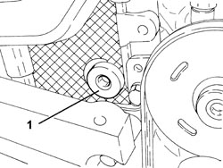
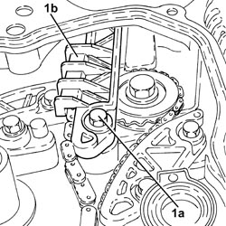
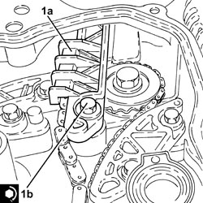

1032C41 TIMING SYSTEM FIXED CHAIN TENSIONER PAD R R
- Path
- Procedures > 10 ENGINE > 1032 TIMING SYSTEM > 1032C TIMING SYSTEM TENSIONERS > 1032C41 TIMING SYSTEM FIXED CHAIN TENSIONER PAD R R
- Kind
- repair procedure (removal / refitting; the operation number is the code)
- Applies to
- engines: 2.2 JTS; all production periods
- Interactive page
- https://sloeber94.github.io/elrnDB-aBrrSpdr/en/#/946001866
Applies to: engines: 2.2 JTS; all production periods
 Removing
Removing
 Refitting
Refitting- Position the vehicle on a lift.
Op. 4450B04 RIGHT FRONT WHEEL - R.R
Op. 7055B66 ENGINE COMPARTMENT DUST COVER IN RIGHT FRONT WHEEL ARCH - R.R.
Op. 1092G10 SINGLE ENGINE BELT - R.R
Op. 1092A10 CRANKSHAFT PULLEY - R + R
Op. 1092G14 ENGINE COMPONENT SINGLE BELT MOVING TENSIONER - R + R
Op. 1048A28 VACUUM AIR CIRCUIT RESONATOR PIPE - R+R
Op. 1008B10 POWER UNIT FRONT SUPPORT FLEXIBLE MOUNTING (TIMING SIDE) - REPLACE
1. Undo the plug for access to the upper bolt securing the chain tensioner fixed pad.
- Undo the upper belt tensioner fixed pad fixing bolt.

Applies to: engines: 2.2 JTS; all production periods
1. Undo the lower bolt (1a) and remove the timing fixed tensioner pad (1b).

Applies to: engines: 2.2 JTS; all production periods
Refitting
Removing1. Position the fixed timing tensioner (1a) in its housing and secure it tightening the lower bolt (1b) to the recommended torque.
Component | Fastening | dia | Value (daNm) | Validity |
|---|---|---|---|---|
Timing fixed chain tensioner pad | Lower bolt | M6 | (engine block side) 1.0 | 1.9 JTS 2.2 JTS |

Applies to: engines: 2.2 JTS; all production periods
- Tighten the upper bolt fixing the fixed belt tensioner pad to the recommended torque.
Component | Fastening | dia | Value (daNm) | Validity |
|---|---|---|---|---|
Timing fixed chain tensioner pad | Upper bolt | M6 | (cylinder head side) 0.8 | 1.9 JTS 2.2 JTS |
- Tighten the access cap to the fixed belt tensioner pad upper fixing bolt to the recommended torque.
Component | Fastening | dia | Value (daNm) | Validity |
|---|---|---|---|---|
Cap for timing fixed chain tensioner pad upper bolt | - | M22 | 6.5 | 1.9 JTS 2.2 JTS |
Op. 1008B10 POWER UNIT FRONT SUPPORT FLEXIBLE MOUNTING (TIMING SIDE) - REPLACE
Op. 1048A28 VACUUM AIR CIRCUIT RESONATOR PIPE - R+R
Op. 1092G14 ENGINE COMPONENT SINGLE BELT MOVING TENSIONER - R + R
Op. 1092A10 CRANKSHAFT PULLEY - R + R
Op. 1092G10 SINGLE ENGINE BELT - R.R
Op. 7055B66 ENGINE COMPARTMENT DUST COVER IN RIGHT FRONT WHEEL ARCH - R.R.
Op. 4450B04 RIGHT FRONT WHEEL - R.R
- Remove the vehicle from the lift.
Topics linked from this page (8)
- 1008B10 POWER UNIT FRONT SUPPORT FLEXIBLE MOUNTING (TIMING SIDE) - REPLACE
- 1020D14 FRONT CRANKSHAFT OIL SEAL COVER - R.R AND REPLACE SEALS FOR VERSIONS WITH OIL PUMP ON CRANKSHAFT, TIMING SIDE
- 1048A28 VACUUM AIR CIRCUIT RESONATOR PIPE - R+R
- 1092A10 CRANKSHAFT PULLEY - R + R
- 1092G10 SINGLE ENGINE BELT - R.R
- 1092G14 ENGINE COMPONENT SINGLE BELT MOVING TENSIONER - R + R
- 4450B04 RIGHT FRONT WHEEL - R.R
- 7055B66 ENGINE COMPARTMENT DUST COVER IN RIGHT FRONT WHEEL ARCH - R.R.